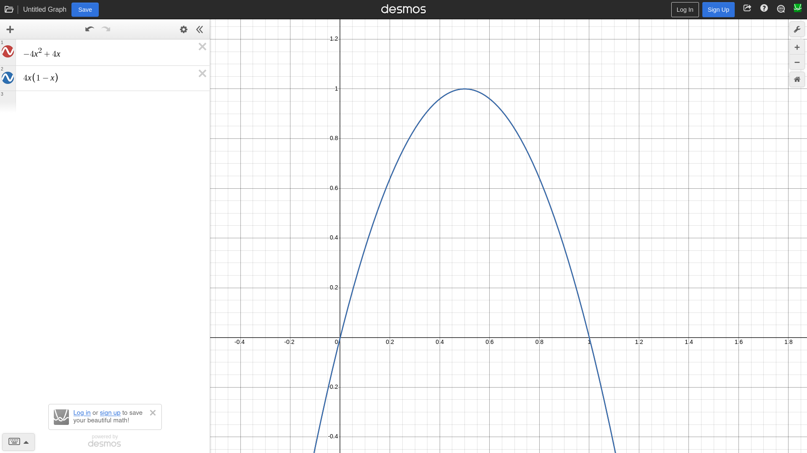

LLMs Can't Problem-solve
Daniel Vishnevsky
Introduction
Let's push away all good and evil LLMs have done for a second and look at the solutions presented by them, specifically for code creation. And who am I to judge? I code and create projects, mostly by hand, but I've been experimenting with LLMs and comparing their output to what I could come up with. Of course, I'm not a role model. All in all, I advise you to experiment yourself as well.
And I want to add that LLMs are prediction machines. They don't have the capability to think for themselves or reason at all - they don't have brains - and simply regurgitate their training data. This alone should confirm the validity of the headline as problem-solving is all about thinking. But, of course, don't just listen to me but go and research further yourself.
Slime animation problem
Let's start with the problem that made me think about this - the slime animation problem. Not an insanely difficult problem, all things considered. We have a slime that is either jumping or on the ground and we need to animate the curve. We know the distance it will jump and how fast it will be.
Given how many times this has been done before, you'd think the LLM would spit out the most optimal solution. That wasn't the case 2 months ago (August 2026). Given an example of a different mob and the half-finished slime code (without the animation, just pure sliding across the ground) it generated a solution that used delta time to physically move the slime up and down. The game was top-down and this was done using the same X and Y axes used for movement. Pretty fragile.
The solution that I came up with was simple: calculate the percentage of distance traveled and drop it in function 4x(1 - x) or -4x2+4x, then offset Y by product of that and the jump height.

I just reasked this question to Claude Sonnet 5.5 and it did give me what I hoped for. But for something so simple (slimes in video games!) you'd think it would give a single definitive answer that doesn't use more state than needed and isn't fragile. If that wasn't the case, I wouldn't be making this blog. Or it could be that by that time my public repository was scraped and included in the training data and all Claude had to do was identify where I took the snippet from and just fill in the blank. Can't comment on that.
Snippet directive demo
This was more recently - about 1 or 2 weeks ago (late September 2026). I was creating an esoteric programming language PIL and wanted to know how snippets would feel. It's an assembly-like language and loops have to be written by hand using gotos and jumps. The translator has to take something like this:
set 0, i set 10, n @loop i < n println i incr i @end
And turn it into this:
set 0, i set 10, n loop-start: greq i, n, $0 jmp $0, loop-end println i incr i goto loop-start loop-end:
Since I wasn't even sure whether or not it would fit the language and didn't feel like implementing another mini-interpreter for parsing the condition, I asked AI (Claude Sonnet 5) to implement a demo. And it did. And it did work but while it never in a million years could have been the bottle-neck of the interpreter, it was doing more work than it should've (push_back instead of emplace_back in appropriate places, insane amount of tiny vector allocations) and wasn't fit for multiple directive types (and I did want to play around with @foreach and what not).
It did skip some features such as parentheses and add something I didn't ask for but I told it to change that and it did. Don't get me wrong, the demo did work and it was enough to tell me that it wasn't the direction I want to take my language in. And it would have been tedious writing a whole demo just to throw it out. However, if I or someone else wrote it by hand it would have been a miles better solution.
I'm not sure where the LLM got this solution from since this is a pretty unique language and I can't think of any that could use directives as such. But there are so many esoteric languages that I might as well not be the only one. I will touch upon unique problems later on.
Structure denial
I started creating a bigger project in PIL - the same esoteric language I was just writing about. And I noticed how I had to resort to using arrays with named indices to create structures and organize my data. It was error-prone and I had to change code in multiple places to add a new field. Well, I made the language. Let's add structures! Here was my proposal of how they could look like:
struct Vec2 x, y
vec2-add(v1, v2)
let x, y, v
add v1.x, v2.x, x
add v1.y, v2.y, y
make Vec2 v, x, y
return v
main()
let v1, v2, v3
make Vec2 v1, 2.5, 5.4
make Vec2 v2, 2.7, 3.3
call v3, vec2-add, v1, v2
printfln "({}, {})", v3.x, v3.y
I had the way that I would try to implement it in my head:
- struct keyword registers a new structure with all fields' lexemes cached (x - 1, y - 2)
- make STRUCT is a special function that creates an array that must have all members initialized
- structures are arrays under the hood that are specifically marked as such (no array operations on structures)
- ARRAY.FIELD would be a new value that stores the local variable's index and the cached lexeme of the field. All identifiers are already indexes under the hood
It's okay if you don't get it, the interpreter has a lot of little things in it to make it faster, like turning everything into indexes.
But the thing that is important is that I asked the same Claude how other languages implement structures and how would it implement them in this language. And it listed how other languages do it (not that important here) and took a wholly different route of telling me that my plans are too ambitious and that I should translate all make calls and field accesses to their corresponding array operations instead. The same error-prone and ugly way hidden behind some syntax sugar.
After telling it how dumb that was it tried finding common ground and move ARRAY.FIELD wholly to the translator. But that's impossible, we don't know the type of variables at that phase. We don't even know them fully at parse-time.
Unique problem issue
Why did it have issues with these problems while I didn't? As was said before, LLMs cannot problem-solve and instead rely on finding the information in the depths of the internet. When they're presented with a problem that isn't all over the internet, they struggle and provide solutions that are not always fit or optimal.
Why do you think the LLMs have no issues with solving DSA problems? They're everywhere! That's an easy copy-and-paste. But don't assume that because the issue is common, the LLMs will provide the best solution. As was seen with the slime animation issue, it's not always the case. That could be due to hallucinations or due to it not knowing which solutions are the best. I'm not entirely sure as I'm not an expert here.
This is increasingly pressing as it's being incorporated in more and more development and an increasing amount of developers simply trust the output. I'm not saying that you should eradicate it from your life but am simply presenting a specific issue that I and many others have with LLMs - they cannot problem-solve.